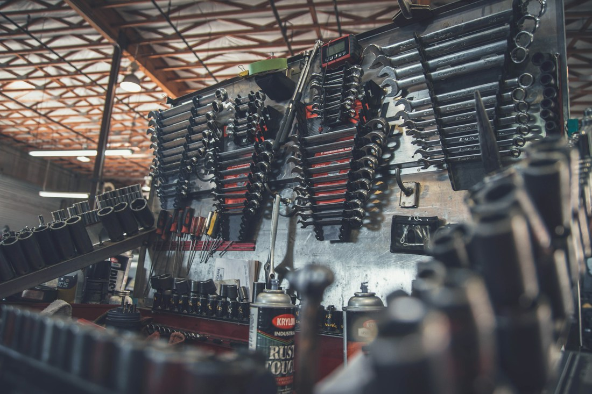
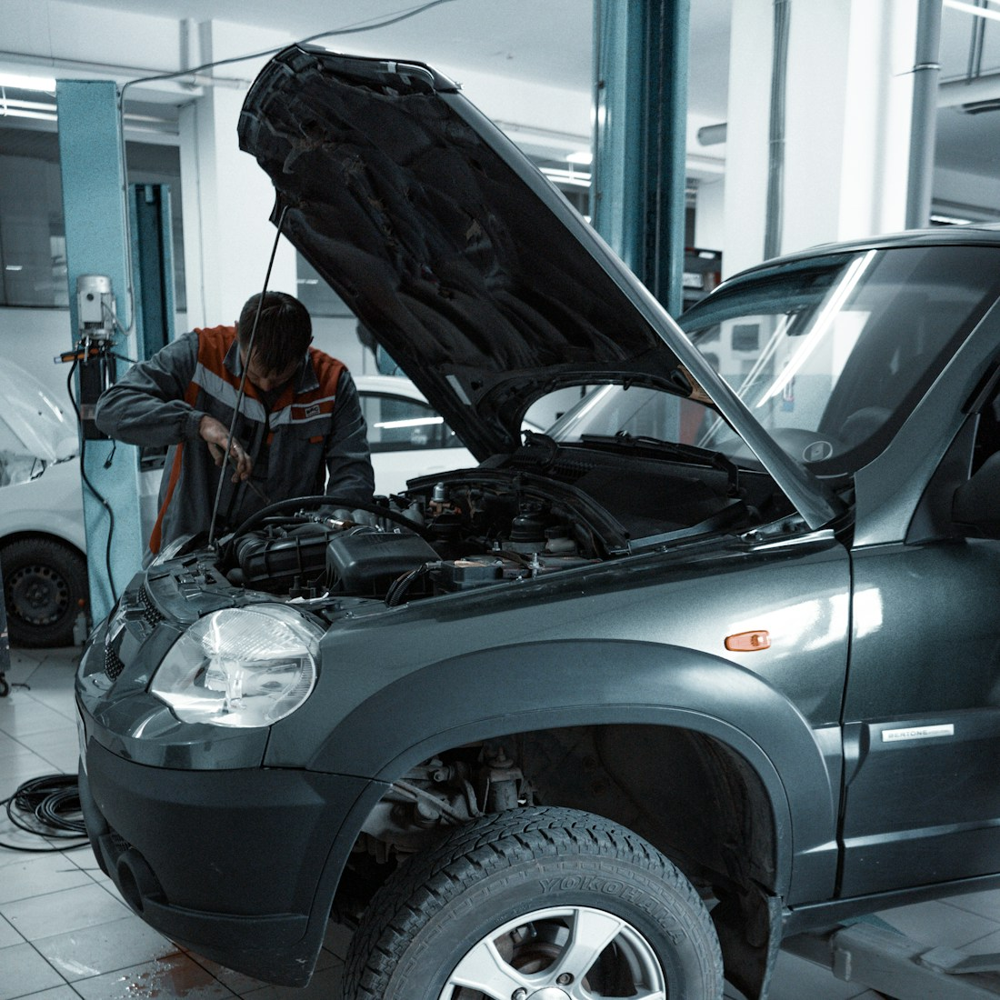
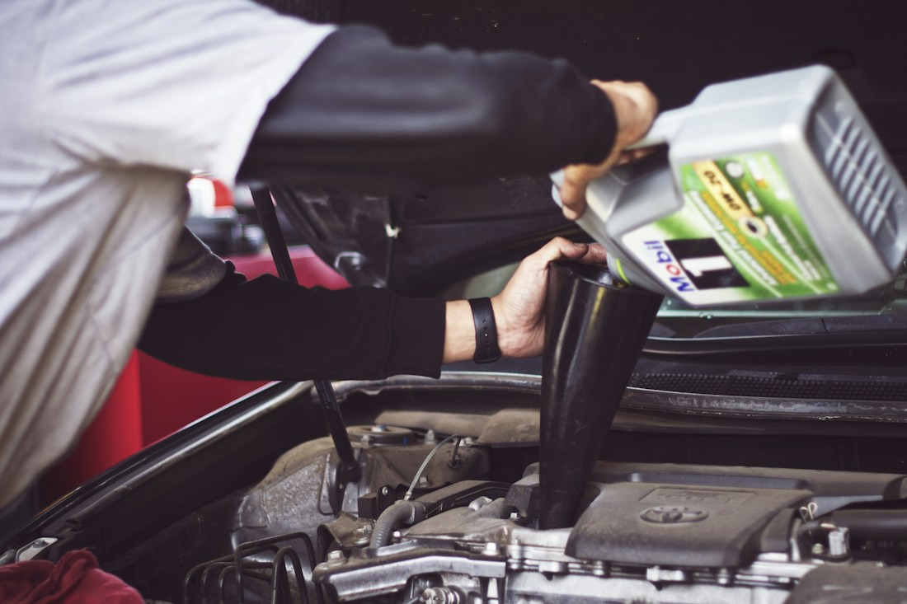

Your place. Your convenience.
Skip the trip. Start with a message and tell us where you are.
Life doesn't stop when your car does. Get mobile automotive service across mid-Missouri—at home, at work, wherever you need us.
Skip the trip. Start with a message and tell us where you are.
Tell us the symptoms. We'll discuss the next step together.
Serving drivers across the communities of mid-Missouri.

When your vehicle needs attention, getting it to a shop can be one more thing to worry about. K & K Mobile Mechanic brings a different approach: automotive help that comes to you.
We've served mid-Missouri since 2022, with one straightforward goal—getting you back on the road, fast.
Not sure what's going on under the hood? Start with the symptoms. Message us to confirm the work, location and appointment availability.

01 / UNDER THE HOODRough running, unusual noises, or a warning light? Tell us what you're experiencing.
Discuss your vehicle ↗
02 / EVERYDAY CAR CAREKeep everyday vehicle needs on your radar. Ask about the work your car needs.
Ask about your repair ↗At home or at work in mid-Missouri? Share your location so we can discuss a visit.
Check your location ↗Message us with your vehicle's year, make, model and the problem you've noticed.
We'll discuss your location, the service needed and appointment availability.
Confirm the details directly with us, then get ready for your mobile service appointment.
Tell us about your vehicle and where you're located. We'll help you figure out the next step.
A non-refundable deposit is required for appointments more than 60 miles from our location. Please confirm travel details and deposit terms when booking.
We serve all of mid-Missouri. Send your town or ZIP code so we can confirm travel and appointment details.
Send a message through Facebook with your vehicle details, symptoms and location. Availability and the service plan are confirmed directly with K & K.
Appointments more than 60 miles from our location require a non-refundable deposit. Contact us to confirm whether this applies to your visit.